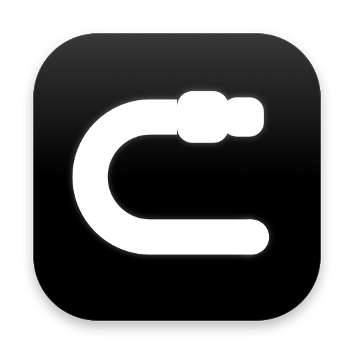
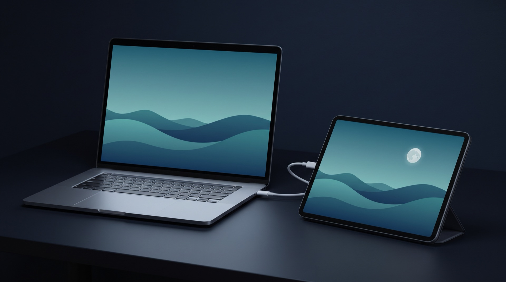
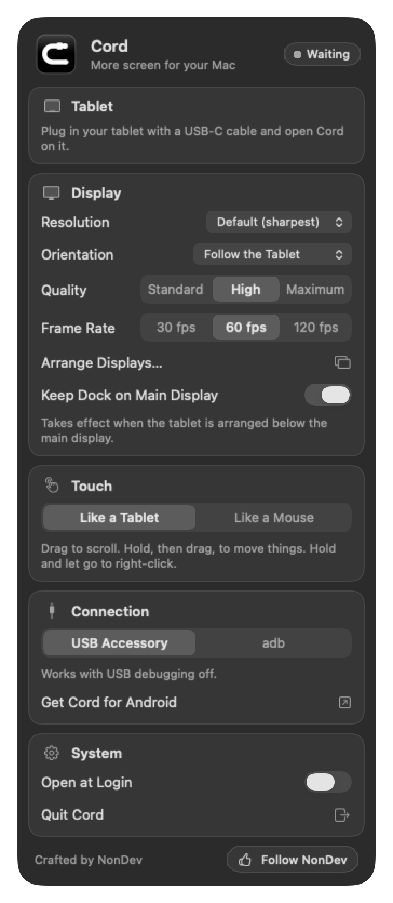

CordCord turns the Android tablet you already own into an extra display for your Mac, over the USB-C cable that charges it. No Wi-Fi, no account.

Picture and touch travel over the USB-C cable, not Wi-Fi. It works with no network at all, and the tablet charges while you work.
macOS sees the tablet as one more display. Drag windows onto it, place it anywhere in Arrange Displays, choose its resolution.
Sent at the tablet's own resolution with Retina-style scaling, at up to 120 fps on tablets that can show it.
Tap to click, drag to scroll, hold then drag to move things, two fingers to right-click. Prefer a mouse feel? One switch.
Landscape, portrait, upside down, or follow the tablet as you turn it. You choose on the Mac.
Put a display below your Mac's and macOS moves the Dock onto it. With Cord the Dock stays where it was.
USB debugging can stay off. Plug in, tap Allow on the tablet once, and that's it.
The Mac app is a 1 MB download that sits in the menu bar. The tablet app is under 1 MB.
Three levels of picture quality, and 30, 60 or 120 fps. Change them while it runs.

Cord lives in the menu bar, and everything it can do is on one panel. There is no settings window hiding somewhere else.
| Tap | Click |
| Drag | Scroll, with a glide when you let go |
| Hold, then drag | Move a window, drag a file, select text |
| Hold and let go | Right-click |
| Two-finger tap | Right-click |
The Mac app is free, and stays free.
Free for 3 hours of use with everything working. Only time with your Mac's picture on the tablet counts. After that, one US$2.99 payment on Google Play keeps it for good. No subscription. Google Play shows the price in your own currency; in Thailand it is ฿99.
The picture travels from the Mac to the tablet over USB and nowhere else. Cord has no accounts, no analytics and no ads.
Cable only, on purpose: the cable is what keeps the picture quick and steady.
One Mac drives one tablet. A second tablet waits its turn.
For now Cord runs on Apple Silicon Macs only.
Cord sends the picture only. Audio keeps playing from your Mac.
Updates and new projects are posted on the NonDev Facebook page. Message there and a person answers.